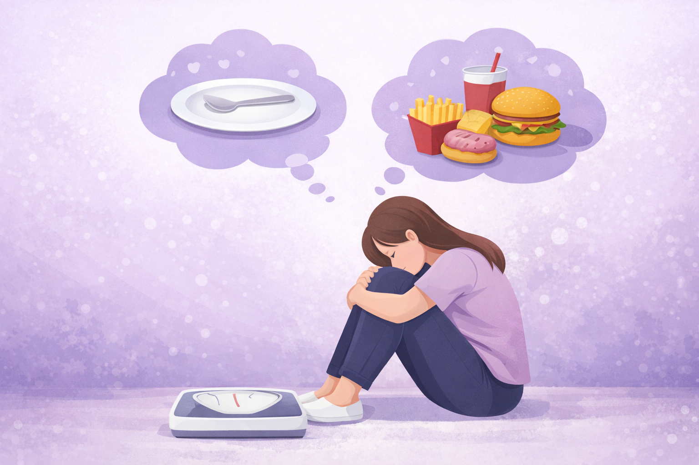

Este site foi desenvolvido como projeto de TCC com o objetivo de informar e conscientizar sobre transtornos alimentares em crianças e adolescentes. A proposta é apresentar, de forma clara e acessível, os principais tipos de transtornos alimentares, seus sinais e sintomas, possíveis causas, impactos na saúde física e emocional, além de orientar sobre como e onde buscar ajuda. Os distúrbios alimentares podem incluir ingestão inadequada ou excessiva de alimentos, o que pode, em última instância, prejudicar o bem-estar de um indivíduo. As formas mais comuns de transtornos alimentares incluem Anorexia Nervosa, Bulimia Nervosa e Transtorno da Compulsão Alimentar e afetam tanto mulheres quanto homens. Transtornos alimentares podem se desenvolver durante qualquer fase da vida, mas geralmente aparecem durante a adolescência ou na idade adulta jovem. Classificados como uma doença médica, o tratamento adequado pode ser altamente eficaz para muitos dos tipos específicos de distúrbios alimentares.
